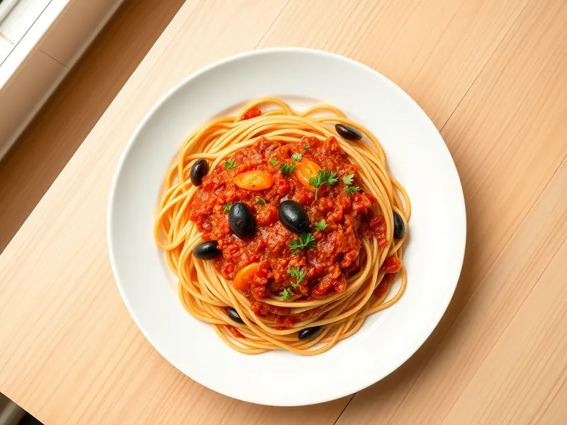

Фото: Иллюстрация ИИ, Cloudflare Workers AI
Паста путтанеска с маслинами
Спагетти в остром томатном соусе с маслинами, чесноком и петрушкой
25 мин2 порц.579 ккал на порциюБ 13 · Ж 22 · У 81Итальянская кухня
Открыть в приложении: порции, таймеры, список покупок
Продукты на 2 порц.
- Макароны200 г
- Томаты в собственном соку1 банка
- Оливки / маслины70 г
- Чеснок2 зуб.
- Оливковое масло2 ст. л.
- Острый перец молотый2 щеп.
- Петрушка по желаниюпо вкусу
- Соль2 ч. л.
- Вода2000 мл
Как готовить
- Вскипятите воду на сильном огне, посолите и сварите спагетти по инструкции на упаковке, обычно 8-9 минут.
- Разогрейте масло на сковороде на среднем огне, обжарьте нарезанный чеснок с чили 1 минуту, пока чеснок не станет светло-золотистым.
- Добавьте томаты, разомните их и тушите 8-10 минут, пока соус не загустеет.
- Маслины разрежьте пополам, положите в соус и прогрейте 2 минуты.
- Откиньте спагетти, смешайте с соусом, при необходимости подлейте 2-3 ложки воды от пасты. Посыпьте петрушкой.
Совет. Если есть каперсы или пара филе анчоусов, добавьте их вместе с чесноком: так готовят в Неаполе. Соус солите в конце, маслины солёные.